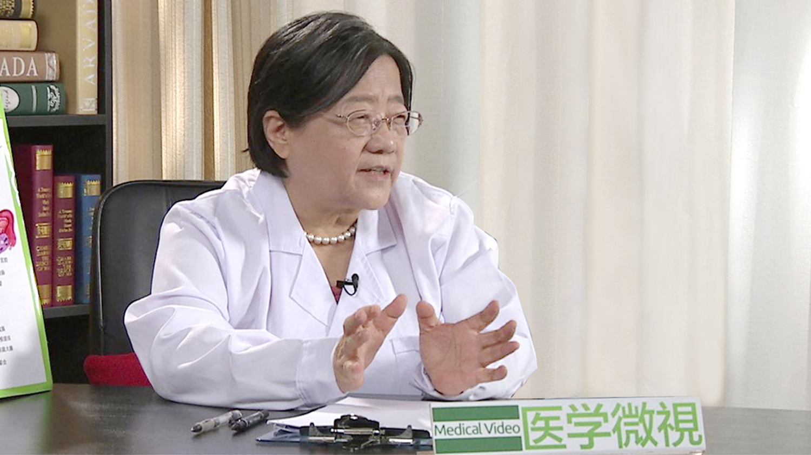

1.103 月经不调//牛建昭教授¶
牛建昭 主任医师¶

主任医师 教授 博士生导师；国家级名老中医；
享受国务院政府特殊津贴专家；世界中医联合会妇科专业委员会常务理事；北京中医药大学原副校长；笫五批全国老中医学术经验继承指导老师。
专业特长： 从事临床、教学、科研45年，擅长治疗和调理月经不调、痛经、闭经、崩漏带下、不孕不育、卵巢早衰、内分泌失调、妊娠产后病、生殖道炎症、更年期综合症、多囊卵巢综合症、子宫肌瘤、子宫内膜异位症、乳腺或卵巢肿块、泌尿系统感染、西医治疗（试管婴儿、妇科手术或放疗、化疗）前后调理、性欲低下、心理障碍等妇科疑难杂症。
主要成就： 主编出版学术著作14部，获发明专利5项，省部级科研奖8项。
学术思想： 牛建眧教授认为：女子以血为本。脾为后天之本，主运化为气血生化之源、孕育之泉；肾为先天之本，主生殖，受五脏六腑之精而藏之，为孕育之根；肝藏血、主疏泄；心主血，主神志，心肝脾肾四脏与女子的经、带、胎、产、杂病密切相关。王冰注《内经》云：“肝藏血，心行之，人动则血运于诸经，人静则血归于肝脏“故诊治妇科病当以调心肝脾肾四脏为要,尤以调肝为先。《黄帝内经》“心主神明,主明则下安”，“主动则五脏六腑皆摇”，因此，她主張寓心理疏导于药物治疗之中，打开心结才能“治病求本”。
在临床诊疗中，她以西辨病、以中辨证论治、中西参合。本着继承中医、发展中医的思想与时俱进，运用中医四诊望、闻、问、切为法，八纲阴、阳、表、里、寒、热、虚、实辨证为纲，同时将现代先进的诊疗技术，作为中医望诊、切诊方法的延伸和发展，实现中医的现代化；综合诊查资料，鎖定中医診疗切入点,在中医理论指导下,做到诊疗的个体化：体现中医的诊疗特色。她根据年龄、月经周期中冲任气血盛衰生理变化的特点，顺势、顺期、顺季实施“一轴（肾-天癸-冲任-胞宫）四期（经后期、经间期、经前期、经行期 ）”为核心的治疗方案，均取得良效。她主张用药平和柔缓、安全味佳，在中药治疗为主同时还指导患者食疗，药食互补。
引起月经不调的原因有哪些？¶
从中医来说就内容比较多了，有外因和内因。
外因就是风寒暑湿燥火，就是自然气侯自然环境的变化，风寒暑湿燥火。
还有内因来说就是喜怒忧思悲恐惊，喜怒忧思悲恐惊，所说的七情和六欲，就是这些方面。
自然的和内心的一些因素都会影响月经，我把它总结成三个，就是气、累、寒，生气，受累，受寒，对现代的育龄妇女来说，我还再加两条，一个是减肥，还一个吃避孕药，所以这五个方面，说通俗点，就是生气、受累、受寒，或者是受气、受累、受寒，避孕，吃避孕药，避孕的方法不当，还有第五个就是什么呢，减肥，减肥的速度太快，都会引起月经不调。
医学的要从西医的讲，就是有一个轴，这个轴，就是说表面上看起来，好像是月经不调，就是什么呢，好像子宫的事，阴道出血有变化，实际上子宫上面有领导它的人，领导它的谁呢，是卵巢，卵巢上面又有领导它，是垂体。
就是说表面上阴道出血，好像是阴道出血的现象，实际上阴道的血从哪儿，从子宫来，子宫的血受谁领导，受卵巢的领导，卵巢上面受垂体的领导，垂体的上面受谁，谁下丘脑的指导，下丘脑的上面又受什么，大脑皮层的指导，也就是说西医来说有一个轴，这个轴自上而下，是大脑皮层、下丘脑、垂体，然后到卵巢，到子宫，最后表现出来是月经，所以当人紧张的时候，大脑皮层紧张，或者生气的时候，都会影响这些，所以一系列的问题都会影响。
如果从中医的角度来说，就讲的是什么？
讲的充任，充任就是气血会充任对她的影响，所以西医你就可以看到，看起来好像是月经血从这儿出来了，经过阴道出来了，实际上它是从子宫来的，子宫受谁领导，受卵巢领导，这一边一个，有卵巢，卵巢上面还有受好多影响，所以作为一个看起来是表面现象的一个月经的问题，实际上牵扯的面非常大，有她整个内分泌轴的问题，就老百姓所说的内分泌不调，也有什么，气、累、寒这一类的精神问题，和外因的问题，所以这个问题还是比较详细的要分析才行。
从器质性病变，器质性病变是西医的讲法，咱们一层一层来说：
比如说子宫，第一个，她这个月经是子宫内膜脱落的原因，脱落下来以后，所以形成血流，如果这个子宫内膜厚，或者子宫内膜上长得什么，长得有息肉，它就会什么，大量的血出来，如果这个子宫基层，这是一个基层，它长的像个胗子一样，它子宫大小大概和一个鸭蛋差不多，但如果在这个肉的里头，如果长的什么，长了肌瘤了，或者长了什么了，长了巧囊了，这种情况下，她就会疼，内膜厚，月经量多，这个里头长肌瘤，或者长内膜异位症，所说的叫做腺肌症的话，她就会疼，但如果内膜太薄，或者甚至有些比如说得了结核了，内膜整个什么呢，整个变平坦了，变得非常薄了，或者有炎症的时候，也非常少，所以这个从子宫的局部来说是这样。
第二个，它上面的领导是谁，是卵巢管着呢，如果卵巢上长了肿瘤了，子宫和卵巢最常见的，一个是肿瘤，一个是炎症，还有什么呢，肌瘤引起的。
进一步来说，如果往上看的话，垂体，如果垂体长瘤子，长垂体瘤，叫垂体腺瘤，这时候也会叫泌乳素，高泌乳素血症，这时候也会影响，经常是闭经，不来月经。
如果再往上看的话，就是下丘脑了，下丘脑就管得比较多了，吃喝拉撒睡都在这上头管着呢，比如说长期的失眠，不睡觉，还有减肥，我曾经看到很多人，比如减肥的速度过快，比如一周的减肥超过五斤，比如说一个人140斤，一个月她就降到100斤，她闭经了，你一问她原因肯定是这样，所以这样的话，就长期的失眠，长期的高速度的减肥，快速的减肥，还有什么呢，非常大的伤心的事，就是剧烈的，家庭里头剧烈的变动，比如亲人去世或者这些，都会影响到。
还有些人长期她节食，不吃饭，纯粹吃水果蔬菜也不行，这样的病人，还有再往上头，比如大脑皮层，大脑皮层这种情况，我们经常看到学校的学生，一到考试的时候，不管研究生还是本科生，一到考试她就不来月经了，这种东西就是大脑皮层高度紧张造成的，所以从这个西医来说，就是这么一个系列的变化，常见的，最常见的还是说子宫或卵巢本身的一些器质性病变。
从中医来说，那就是气。
第一个说是气，这个气，一种是自己生气，一种是受气，经常看到这样的妇女，比如说心情不愉快，如果喂奶的时候，她奶就停了，产后喂奶，奶就停了，如果她来月经的时候，月经就停了。还有正在吃饭的时候，听到什么不好的消息了，她当然引起月经不调的原因有哪些？
饭吃不下去了，她月经也就停了，所以就是一些重大的一些生气的事情。
所以特别女同志，要特别注意这个气，因为气，百病从气生，而这个气在女同志里头特别重要，倒不是说女同志心眼就狭窄，但总的来说，比起男同志来说，她心细，她观察的事多，她就往脑子里头去，所以这样她容易让她注意力集中到这些不愉快的事身上，所以她也有影响。
第二个就是寒。
寒是什么呢，受寒，你看经常看到一些女同志，天冷的时候她都穿得非常短，因为什么呢，人身上有几个风口，一个风口是脖子后头，脖子后头有两个风口，一个就是肚脐这儿，还有两个脚心，这女同志爱露肚脐，中国人还稍微好一点，但是基本上来说也开始露肚脐，也不好，所以老觉得肚子凉。
还有晚上，就是这种情况就是，脚上挺热的天气吧，她就不穿，在家里头，有时候不穿鞋，她就直接踩在水泥地上，或者什么地上，这样很容易着凉。所以这种着凉的很多，还有一种就是说，月经期都是吃冰冷的东西，贪凉，尤其青少年最多，爱吃冰棍，贪凉，还有辛辣的东西，这些东西就是寒性的东西，容易引起，这是最常见的女性容易犯的事。
还有第三个，就是说受累。
这个累，我说的累，是作息，有一种是真正的有压力，工作累，工作经常加班，还一种熬夜，尤其是90后最多了，经常晚上12点以后睡，这人就睡觉，一定是子午觉，午觉大家能理解，子时的觉呢，因为子时是从晚上的11点到夜里的1点，这个时候是阴阳正在交替的时候，这个时候要特别注意休息。
有些人两点才睡，一点才睡，把最好的这段时间，我们做过研究，在一点钟，晚上十一点到夜里一点的时候，这眼睛是真正闭上睡觉的，而一过了十一点，一过了一点以后，这眼珠子就开始转了，实际上已经开始清醒了，而这时候，去了这个深睡眠以后，深睡眠的时候她没睡觉，她到两点了才开始睡，实际上人一般来说，十一点半以后就睡不着了，再好的睡眠睡不着，所以这时候，如果过度的劳累，尤其晚上在黑暗的地方看手机，一直兴奋，看手机聊天，这些东西呢，就特别容易影响生的节律，影响月经也很多。
还有一个就是说避孕，避孕药特别用紧急避孕药，用的不当，或者长期用避孕药，有些副作用没有及时的纠正，没有跟医生反映。
还有减肥，减肥我刚才前面已经说过了，减肥是速度太快，减肥速度太快，而且这个用一些不良的减肥药，对卵巢损害是非常大，所以我特别在这儿，我特别提醒年轻的女人，尤其没有生过孩子的，就快速的剧烈的减肥，引起了月经不调，最后导致，一检查指标，是卵巢早衰，所以这个特别特别注意，至于说你生完孩子了，四十多岁了觉得有点胖，减减也还可以，大家都可以理解的，特别年轻女孩子，大学生里边，和刚工作的女同志，和要结婚前的女同志，万万不可减肥，减肥的速度要减慢点，要科学减肥。
为什么气血调和对女性非常重要？¶
什么是气血，这个气的概念是非常大的一个概念，我们从气字这个来说，你看这上头，这个在咱们的中医里头，在文字读什么，气球的气，是不是气球的气，里边还有一个繁体字里头，是不是还有个米，米就是五谷，这气实际上是气球要五谷，首先气的来源，它一定有物质原因的，它一定是什么呢，一定是从最常见的就是过去的。农耕时代，主要是从五谷开始，所以一定要吃粮食，所以这个气，说的意思，它是一个物质基础的。
整个这个气，是人全身能量的总的一种概述，所有人的能量，这个能量就表现在哪儿，能量表现在，就是我们说话有底气，吃了东西以后，能够消化，能够排出去，这个肠道整个能够蠕动，血管有一定的血压，能维持一定的血压，血管也能够搏动，能够收缩，说话，智力，和她整个人的形态都很一致，就神志清楚，是一个人的精气神，就是人的精力和能力的一种总的表现。
我在做研究生的时候，专门把这个气进行过研究，这个气可以用物质形态表现出来，它在细胞里头，我们就有一种，在细胞里头，我们看到有一种，有一种叫线粒体的东西，叫线粒体，这线粒体的东西在细胞里头，有很多的颗粒，这个颗粒上，就可以表现出来什么，叫做ATP酶。
在这儿就可以看到我们用了气血口服液以后，气血口服液是当归和党参，当初我们又加了一味黄芪，做了以后，就看到给这老鼠做实验的时候，就发现它的这个线粒体，在细胞里头这个线粒体，这个东西，这个在电子显微镜下才看的比较清楚，这线粒体这个物质，上头发生了很大的变化，一个增大了，一个增长了，它功能就很好的，说明这个它是有一定的物质基础的，而且可以看到什么呢，耗的氧，消耗的氧它会有变化，可以看到既然有物质基础，也需要一个有个氧气的代谢，这样一个过程。
而气这个东西，在气的推动下，血液才能够流动。
气是什么，气为血帅，在气血的关系里头，气是帅，它是有个率领的作用，相当于火车头作用，气为血之帅，就是带着这个血液走的，没有气的推动，血液就不能流动。
而这血液是广义的，包括我们各种管道的一些运行，或肌肉的运行，所以气，在气的，气血里头为什么把气放在前头？先有气后有血，气带着血走，所以气血在人的非常重要，它有一定的物质基础，它来源于五谷，而分布到全身，分布到肌肉，人就有力量，分布到肠道，人就可以吃进去消化了排出去。
所以当你这个气不足的时候，一个人最大的感觉，觉得疲劳，没劲，下班回来就想躺在那儿，实际上气血不足就在这儿，当然女同志来说又更复杂一些，女同志每个月都要排血，都要出血，少则50毫升，一般都是200毫升左右，200毫升没有多少，就我们那个八层的那个纱布这么大的，一寸那个纱布，叠八层的话，就能吸50毫升血，没有多少。
但是如果每个月都要出200毫升血的话，一个人也就八斤血，血也都要一百多天才能够再生出来一些新的血，所以这样的话就消耗比较大，所以如果遇到大出血的病人，或者月经量比较多的病人，就往往就形成什么，血虚，再加上她又生气，所以这气的另外一个表现，就是生气。
我们说这个气，是需要吃进去的，是人需要像这个五谷里头，要从五谷里头要什么，要把这个气的来源给进去，当然如果你要是生气的话，气就跑了，这个气当然就是所说的肝气，肝气不舒的时候，也会引起气血不畅，所以气的概念比较多。
血虚也能导致气虚，因为缺血以后，不能分布在全身了，所以血管里头就瘪了。比如说扎针扎进去，抽不出血来，血很稠，或者血量非常少，所以她也就气就不足，这种人也是要注意，特别是女同志，由于血虚导致的气虚，由于血虚导致的肝气不舒，心情不好，都和这有关系。所以你看女同志一到四十多岁，黄脸婆，什么叫黄脸婆，她就是那个血少，贫血，萎靡不振，她就气血，就是血管充盈不够，那她就肯定会气色也比较差一点。
（气血不和对月经不调）也可能是果，也可能是因，因为什么，因为月经不调引起大出血，比如说西医叫功能性出血，或者我们叫崩漏，这样的情况，那么由于失血，这叫失血性的引起的气虚。
当然气虚也可以引起血虚，你比如说生气，或者是什么。你看经常有一些女同志吧，心情不好的时候，特别更年期的时候，就容易大出血，还有年轻的小姑娘月经刚来的时候，一生气，她容易大出血，这些气血就是会引起什么，引起整个的月经不调，这时候她气，肝气不舒引起了血虚，这病人就感觉到头疼，一来月经就头疼，这种人一般来说，都是什么呢，都是血虚引起的，血虚一般引起的就是月经量少，气虚引起的就是月经往后错，这样比较多。
气血调和非常重要，我做研究生的时候，研究的就是气血口服液，气血口服液在很多地方，都还是非常有用的，当然现在社会上关于气血方面的药物很多了，有气血胶囊了，有各种各样的药物，这些药物不外乎就是补充气血的，它还是有一定的作用的。
气血不和也会引起月经不调吗？¶
血虚也能导致气虚，因为他缺血以后，不能分布在全身了，所以血管里头就瘪了，比如说扎针扎进去，抽不出血来，血很稠，或者血量非常少，所以她也就气就不足。
这种人也是要注意，特别是女同志，由于血虚导致的气虚，由于血虚导致的肝气不舒，心情不好，都和这有关系，所以你看女同志一到四十多岁，黄脸婆，什么叫黄脸婆，她就是那个血少，贫血，萎靡不振，就是血管充盈不够，那她就肯定会气色也比较差一点。
（气血不和对月经不调）它也可能是果，也可能是因，因为什么，因为月经不调引起大出血，比如说西医叫功能性出血，我们叫崩漏，这样的情况，那么由于失血，这叫失血性的引起的气虚，当然气虚也可以引起血虚。
你比如说生气，或者是什么，你看经常有一些女同志吧，心情不好的时候，特别更年期的时候，就容易大出血，还有年轻的小姑娘月经刚来的时候，一生气，她容易大出血。
这些气血就是会引起什么，引起整个的月经不调，这时候她气，肝气不舒引起了血虚，这病人就感觉到头疼，一来月经就头疼，这种人一般来说，都是什么呢，都是血虚引起的，血虚一般引起的就是月经量少，气虚引起的就是月经往后措，这样比较多。
气血调和非常重要，我不是说了吗，我做研究生的时候，研究的就是气血口服液，气血口服液在很多地方，都还是非常有用的，当然现在社会上关于气血方面的药物很多了，有气血胶囊了，它还是有一定的作用的。
哪些人容易出现月经不调？¶
一般来说是，就是自然和内心不那么协调的人，怎么说呢，有些人对外界环境一变化，很快就有反应，比如冷一点也不行，热一点也不行，刮风下雨都不行。
还有的人精神上比较脆弱，稍微有点事就搁不着稍微有点事就紧张，在别人看来不是着急的事，她就着急，而且爱容易往坏里想，尤其事多的女同志，她有点事吧，她就往坏里想，这种人就要特别注意，就是精神比较脆弱，神经衰弱。
还有个体就是抵抗力比较差，自然环境又有点变化，心里又有一点什么变化，这种人就要特别注意，有些人你看挺皮实，没事儿，再大的事都能顶过去。
所以作为我们一个要健康人的话，不是说血压不高，血脂不高，心理健康非常重要，这个在女同志里非常重要。所以我经常跟病人聊天的时候，都要问问她家里有什么事了，帮她找找原因，找完原因，还要帮她协调协调，这样的话她心里头就宽敞以后，她月经就好了，比药物的作用还好，所以有些人，我跟她谈完以后，牛大夫，你说的这个话，比我吃药还要紧，所以有些这些事，我们做医生的要多花点时间，尤其我们做中医的，多给女同志像交朋友那样，把她的内心挖出来。
为什么月经不调的女性要调理“心情”？¶
过去古人看病有一句话，叫宁看十成人，不看一小儿，就是宁愿看十个成人，不愿意看一个小儿。为什么？
小孩的病小孩不会说，小孩不会说他哪儿疼，哪儿不舒服，所以不愿意看这小孩。后头还有一句话呢，宁看十小儿，不看一妇人，这就越来越难了，看一百个男人，都不愿意看一个妇女，为啥？
女同志的内心来说，她比较细致，她比较深在，就是有很多内心的东西，当然如果你要作为一个大夫来说，我们作为长辈，作为朋友，作为师生关系也好，儿女关系也好，一块聊聊这些事，我觉得大家都能舒畅，把我们个人的一些生活经验，社会经验，工作经验，大家交流交流，我觉得就能够舒舒心。
所以我经常跟病人聊天的时候，都要问问她家里有什么事了，帮她找找原因，找完原因，还要帮她协调协调，这样的话她心里头就宽敞以后，她月经就好了，比药物的作用还好。所以有些人，我跟她谈完以后，牛大夫，你说的这个话，比我吃药还要紧，所以有些这些事，我们做医生的要多花点时间，尤其我们做中医的，多给女同志像交朋友那样，把她的内心挖出来。 肝就和了，肝气就好了。
肝有两个作用，一个作用就是藏血，第二个就是能够理气，就是疏肝，有疏泄作用，你给她把这个肝气，把心情一调顺了，完了她的血就好了，它就储藏血了，血一足，它整个运行就好了，月经就好了。
经常我们看到，包括就是不生孩子的人，不生孩子的人，你看起来她是好像月经的事，不排卵的事，你跟她一调，一讲讲夫妻关系，讲讲各种方法，当然要具体的指导，她心情一舒畅，很快就怀孕了。我曾经医过很多的人，我有个学生给我介绍他的一个同学不生孩子，我一问以后，她根本没病，她全是一些误解，我给她一讲以后，方子都没开，我说你回去，两个月就怀上了，所以这些东西对于女同志来说，这个心病还挺重的。
所以作为我们医生来说，说实在的，第一个首先是帮助病人，第二个就是安慰病人，第三就是治愈病人，治疗病人，首先我们就是安慰病人，帮助病人，找到原因以后，就这月经非常复杂，在这儿，如果我要说的话，能给你讲出很多故事来，为什么，这月经表面上看起来是这儿出点血，实际上上至脑袋，上至头，下至脚，就局部来说，都有很多原因，要细细的问，把这问出来以后。
当然不外乎两类，精神上的，心理上的，或另外一个，就是有器质性的。这两个原因找着以后，如果没有器质性的病，就多跟病人聊一聊，给一些疏肝理气的药，妇科类最常用的药，很快就好了，所以我觉得月经病，既复杂，也简单，所以找到原因。
所以有月经病的女性朋友们，一定不要大意，不要说生不了孩子的时候才去找大夫，可以早点去，早点去找大夫，帮你看看这个问题在哪儿，该怎么帮助，进行治疗，我觉得月经这个问题，我在这儿多说两句，就是说它看起来简单，实际上复杂，有很多的因素会影响它。
月经不调都有哪些情况？¶
月经不调一种就是说，从时间上，应该每个月来一次，少数人那叫月经。
少数人叫并经，就是两个月来一次，并在一块了。
还有一种叫季经，三个月来一次。
这些倒也罢了，因为有些人一来了，她从来她就是两个月来一次，从一开始，然后三个月来。
个别人还有来月经的时候，从鼻子里流血。
这都罢了，最要紧的是什么，她不来月经，她原来好好的，她突然闭经了，这是一种。
还有一种就是来的多了，密了，一个月，半个月就来一次，就是过密了，这是从她周期来说。
第二个就是从它的这个量来说。
量来说，有的就是说，一蹲在那儿，像自来水水管，直流，这是一种。
还有一种来了以后根本就不行，用尿不湿，用白天要用夜用的那种，大号的，这是属于月经量多的。
还有一种月经量少的，就护垫，护垫就都不要用，就那么有点擦血，所以这就两个极端，特别的少，或者特别的多，或者沥沥拉拉，这都是这从量上。
还有的人是有大血块，大血块伴随着疼痛，所以这些东西呢，都是最常见的，就是说疼痛和周期，还有量，这是最常见的三种。
月经不调要做哪些检查？¶
月经不调我们首先看，她有没有器质性的病变，咱们就做一个什么呢，做个B超就行，B超一般我们就是，如果没有结婚的人的话，就做一个憋尿的这种腹式B超，结婚以后，一般就做阴式B超，可以看到卵巢，子宫的情况，如果再必要的时候，没有结婚的女性，可以测肛查，就叫肛超，这是器质性的病变。
如果是说怀疑她有内分泌的病变的话，我们一般都是要做一个激素六项，激素六项一般都是让来月经的4天之内，最好第二第三天，来月经期间，就带着月经去做，到医院去做，然后空腹抽血，这里头有六项可以检查的，有雌激素，有雄激素，还有什么呢，促卵泡生成素，促黄体生成素，还有什么呢，还有泌乳素，还有孕酮，这六项都可以查。
如果要是觉得，这人怕冷，除了月经以外，每次有血块（而且）疼，这种人就可以再加一个甲状腺功能（检查），因为现在甲减的人比较多。
如果这个人很胖，年纪轻轻的，或者最近体重增加特别厉害，再加一个血糖（指标检测），就是把内分泌查一查，在这个基础上，就可以发现很多的病。
大概主要是查这两个，一个空腹抽血来月经的时候，一个就做B超，这两个非常简单，基本上就能够大概有个百分之八九十，就能判断出来。
（中医上来讲）月经不调一般要是说，病人都能说出来，一般来说一种从寒上说，一种从气上说，因为一种是气滞血瘀，就是这个气，气滞了，就这个气停滞以后，生气，或者什么东西，气滞引起的血瘀，这是一种。
还有一种就是寒凝的，大概我们首先要分成它是什么，它是寒凝还是气滞。痛经里头，我们基本上还要分成这样，然后如果是说月经量多少的话，还应该分阳虚或阴虚，我就是四诊八纲来判断，因为这些东西，它分类比较多，粗的分和细的分都有很多，都可以。
如果来月经的时候，根据她大便情况，如果这个人平常大便正常，但来月经的时候偏稀，拉稀，这一般都是脾肾阳虚，除了治脾以外，还治脾肾阳虚，所以根据不同的情况来针对。
女性长黄褐斑一般和哪些病有关系？¶
这个斑的话，女性长斑的人也挺多的，一般斑来说，和三种病有关系，一种就是子宫肌瘤，有子宫肌瘤的人，基本上脸上都有斑，还有就是慢性盆腔炎。
还有就是用这个避孕药用的不当，滥用，这三种原因都容易导致脸上的黄褐斑，当然还有一种就是痘，青春痘，这个痘经常的，一种就是说，和我们这个月经没有关系的，她来看我（门诊），但她实际上是脂溢性皮炎，头发里头也有，两天如果要是不洗头发，就发黏、发油，来了病人看脸又光又亮的，这是一种。
还有一种就是跟我们妇科有关系，就叫多囊卵巢综合征，这个就是和妇科有关系，它往往伴随着有什么呢？
伴随着雄激素高，甲减，伴随着什么呢，你一查血糖，血糖高，人比较胖，如果是没有结婚的人，一般是月经紊乱，紊乱表现在一种是闭经，还有一种就是（月经紊）乱，就是出血多，没有任何规律。还有一种就是说，病人无缘无故的胖，除了脸上有疙瘩以外，背上也有疙瘩，这种就是多囊卵巢综合征。
现在这种病人很多，每天我看的病人里头，每五个人里头就会有一个，而且青少年特别多，她因为最后的危害是什么？
不怀孕，有些人就是到不怀孕了几年来查，一看她原来是这个，实际上她在青少年的时候就有了，她在中考以前就有了，这些病现在是在我年轻的时候，这是比较少的病，但现在是普遍比较，咱们这个压力，孩子压力大比较有关系。
中医是怎么调理月经不调的？¶
治疗月经不调，一般先看她哪些方面吧，如果是她痛的话，要分清楚，她是器质性的痛，还是一般的痛。一般生过孩子的人，一般这个痛有几种情况：
一种就是说，有一定的遗传性，她母亲是不是也痛，而且她这个痛是不是原发性痛，从第一次来月经就痛，这叫原发性痛经，痛经的程度怎么样，如果是没有结婚的人，然后就问问她，就分她是气滞还是寒凝，一般都是寒凝。
这种我们一般都告诉她，一般到什么的时候要保温，一般来月经保温，烫脚，拿热水泡泡脚，每天早晨可以吃一块钱钢镚那种这么大的姜，带皮的姜四五个，四五片，再加上点红糖，里头搁两个，卧两个鸡蛋，喝点红糖，姜汤，熬那么个四五分钟，可以熬着吃，就是属于寒凝的这种。
还有就是气滞的。气滞的那当然，气滞就给她疏肝理气，孩子跟老师生气了，学习压力大，理理气，有温经的和理气的，这两类的治疗方法，都可以治疗。成人也可以，一般来说痛经，有一部分人，有性生活以后就会有改善，有性生活以后。
还有一部分人，还有一半的人吧，生完孩子就好了，生完孩子痛经就好了。当然有些人生完孩子还疼，这个时候就要高度怀疑，高度怀疑什么呢，怀疑她有（子宫）内膜异位症，或者流产过，虽然她没有生孩子，但她流过产，这时候你就要高度怀疑她是（子宫）内膜异位症，因为（子宫）内膜异位症这种疼痛，是非常痛苦的。
我看到那病人就是说，病人的话说，撞南墙的，就是想撞墙，死的心都有，非常痛苦，这种人要高度怀疑，而且她每次疼的时候，不能缓解，除了吃药不能缓解，这种人就要让她做个B超，看看是不是有（子宫）内膜异位症，这很快，或者是腺肌症，她这种疼，放射，向肛门串，向大腿根这儿串，反正是症状比较多，痛苦比较厉害。这种我们就是要用活血化瘀的药，活血化瘀温经的药，多方面，这我们都有经验的方子，效果很好的。
还有一种就是单纯子宫肌瘤，就肌壁这层，就是肌肉这层里头长了肌瘤，以这个为主，肌瘤并不大，但病人很疼，这个我们有个消肌瘤的药，通过这个肌瘤，不让它长大，或者缓解这个疼痛都能解决，所以这个痛经这个，原因还是比较多的，大概我们分为虚实、寒热，热的很少了，一般都是气滞血瘀，寒凝，这些东西，我们来治疗，都有办法。
“气滞”对月经有影响吗？¶
就文字来说，就气不通了，就气滞停在这儿，它这个气是运行的，在全身运行的，它停了。
你比如说咱们吃了东西，她应该什么，吃下去以后，经过咽部，经过食管到胃里头，有时候咱们就噎住了，我就讲这么一个意思吧，吃东西噎住了。病人有时候经常来说，牛大夫，我这儿堵得慌，就这儿好像有个东西，中医里叫梅核气，就好像有个东西在这儿堵着呢，这是气滞的一种比较典型的。
女同志，她气滞。进一步来说，还有个气滞，气是全身能量的一个总概括，它这个能量呢，推动要是在胃里头吧，就在消化道，她应该吃进去的东西到胃里，胃里再通过胃的收缩下去，到肠子，肠子再运动，给她排出去，如果它不能（运行）了，它可以停在任何地方，比如说胃，有些人在正在吃饭的时候，听到一个生气的事，这饭马上就吃不下去了，因为什么，她饱，她胃不收缩了，它从这个贲门不能通过胃的收缩，通过幽门到小肠，过不去了，这时候就吃不下去了，为啥，停了，一摸这地方板板的。
还一种就是肠子，肠子下去以后也是，也是胀鼓鼓的，在肚脐下鼓胀鼓胀，但是没有大便，这都是气，这都属于气滞。气滞最经常表现在什么，消化道比较明显。
当然还有一种，就是说月经就停了，（还有）就是产妇，生完孩子的时候，在月子里生气，在月子里妇女她最爱生气，生完孩子以后觉得冤得慌，我怎么受这么大的罪，这么疼，我生个孩子，看什么都不顺眼了。这个时候你看她一生气，平常看顺眼的都不顺眼了，这时候这一生气，奶就停了。
这女人所有能够运动的，需要能量，你像出奶也是需要能量，她一挤，挤出去，你气滞了，停在那儿，它不挤了，就（出现）乳胀，出不来，奶吸也吸不出来，孩子也咂不出来，这就开始得什么病了，急性乳腺炎，胀得挺大。你看她子宫平常像鸭蛋那么大，你在B超下一看，已经像网球那么大了，血鼓鼓的，它就不下来，她自己也能感觉，这就叫气滞。
凡是有气的，大部分都伴随着疼，这是我的体会，就是因为什么呢，你不通了，它就痛，你通了以后，它就不痛，所以我们治疗一般都是，一般理气的，温和的，温热的，这样的药比较多一点，就可以很快的解决这些问题，解决气滞的问题。
“寒凝”对月经影响大吗？¶
寒凝就是受冷，这个人的体温应该有一定的基本的温度，身体各个部分，对这个寒冷的抵抗是不一样的。
比如说人背上，背上就怕凉，前头就好一点，你比如家里有空调，你怕凉的人，最好面对着空调可以，但是你要背对着，他就容易（受风），为什么呢，背上后头，就头发迹这个地方，有两个什么，风池、风府，这个地方是风口，它容易侵犯这个地方。
还有肚脐，你看很少有人说，我这儿凉，都是肚子凉，为什么呢，肚脐这儿也有风口，所以这个地方容易进风。
还有两个脚心里头，尤其晚上睡觉的时候，你空调在这儿，头在这儿，好像没事儿，实际上你睡觉的时候，脚心是不是对着空调，脚心那样，风就进来了，风从脚心上。
风还有另外一种，真正的大风并不怕，大面积的风，就怕是贼风，什么叫贼风，就是那小眼的风，门缝里的风，窗户洞，窗户窟窿里的风，这种风挺厉害，因为它把能量都聚集在这儿。
因为受寒以后，人体的功能它是在一定的恒定的温度下，恒定的pH值，这个环境下，外环境下，它在运作，因为身体已经适应这个环境，所以如果受了风，受了寒以后，它温度降低了，它脱离了它正常的工作那个环境了，它就不动了，所以它就凝。凝和滞实际上差不多，凝比滞更厉害，滞是停住了，它这个是凝结聚在一块了。
所以经常能够摸到疼的地方如果有疙瘩，就是我们说经络上有疙瘩，不光这个地方疼，还能摸到有个结节，这都是属于凝，凝就是比如说成块，聚集在一块，这个难度就比那个就难度要大一点。
还有一种是湿，湿度，这个湿也是很难办的事，就是说千寒易去，一湿难除，这个湿比寒更厉害。先是气，如果从影响来说，气是最容易去掉的，其次就是什么，寒，最难去的实际上是湿。
湿气比较重，湿气在不同的季节，它能停留很长时间，它范围也比较大，影响比较大，特别在女性里头，她主要表现在一个是白带，一个是消化道，当然对月经来说影响不大，月经主要还是（和）气和寒（有关）。
“温经”对月经不调有哪些作用？¶
温经就是说，温实际上我们就是说，希望能够使这个盆腔的血液吧，现代医学的词来解释，盆腔的血液，能够正常的循环。因为每次月经来的时候，月经它是分成好几层的，月经你看见它来，好像是薄薄的一层，最后的也就是一点几厘米，正常月经完了时候，也就0.2厘米，非常薄。
从薄到厚的这个过程中，实际上它这个子宫内膜，前头是有一层表层，后头这是底下都是很多的血管，都是血管。然后这是后头是好多的肌肉，这就不管它，这些血管呢，这个月经全靠这些血管充盈的时候，然后再剥离，然后才下来才是月经。
如果这个月经的血管已经凝固了，或者它不能剥离，那么在这儿就不存在，就没有月经了出现。
另外你看这个病人的舌苔的时候，你就看它发紫，正常来的时候是淡紫色的，但有些人是酱紫色的，颜色非常深，甚至酱紫色，酱紫红色最深的，这病人血就瘀在那儿了，甚至还可以在舌头的边上，可以看到什么呢，看到好多的斑点，叫瘀斑，这种就是寒凝比较重的，实际上就是说，血液没有循环，局限在一个地方。
（温经就是）血液让它循环起来。
女性月经不调应该注意哪些事？¶
你这个问题挺好的，因为几乎来说，在找中医看病的，都要问问这个，这也是中医和西医看病不同的一个地方，就除了给一个方案以外，还要给病人进行养生方面的一些指导。
我们最常见的就是说，如果说就问问她这个原因吧，如果她是经常爱贪凉的，我们一般就告诉她，经期是不能吃带冰的食物，就是从冰箱拿出来以后，要稍微放，我经常说的话，你爱吃冰淇淋的话，你就把这冰淇淋拿出来化了吃，闻闻那个味，没有那个形状了，但能闻闻那个味喝下去也管事。
还有是酒类，酒类也要注意，特别白酒，现在女同志能喝酒的也有，主要是注意这个。还有辛辣的，因为辛辣的东西，它刺激的是胃肠道，但是实际上，因为子宫是包在什么呢，包在这个，在骨盆里头，骨盆周围就有肠道，前边是膀胱，后边是直肠，还有结肠，肠子蠕动的时候，也会刺激子宫。所以这些东西，辛辣的东西告诉她，不能吃。还有是应该按时的睡觉，不能生气。
这么说吧，气、累、寒，她的病就是从这儿来的。当然因为用避孕药或减肥的药毕竟是少数，但是基本上气、累、寒里头，总能挑出一个来，有的这三条都占的有，气的问题就是说，注意不要生气，不要跟自己较劲，不要跟别人生气，心放宽了，这是第一个。
第二个，不要受累，一定要按时睡觉，十一点以前一定要睡着，我都是这么交代的，哪怕你两点、三点再醒来都没关系，这是一个。
第三个不要受寒，（病人）来了以后，我第一个习惯就是爱看她们穿的鞋，看她穿的鞋啥样。很多人吧，大冬天，她有时候也穿得非常少，要不就穿得很短，要不穿得很少。我就告诉她，如果你要是寒凝的人，你晚上睡觉都要穿袜子，白天也要穿袜子，穿个丝袜，哪怕就一层薄薄的丝袜就管事。
不要穿着凉拖鞋，更不要直接踩到那个地上，如果你家里有地毯没关系，如果你家里就瓷砖的，特别是夏天，有空调的时候，为什么呢？空调的这个打下来那个风，冷空气重，它在下边，下边打到地上以后，它从哪儿反射过来，它从这个地面反射出来，如果你要是地毯的话它就吸收了，木板也好一点，但是一般的如果是咱们的这个瓷砖地的话，马上反射过来，就在你脚上。
如果办公室的人，我就建议她们，要不在肚脐上头搭一块布，要不你就穿上袜子，病从口入，寒从脚起，这是我经常交代的。病从口入，寒从脚起，你脚要是不注意，这个风口就上去了，而且夏天，你别看夏天，有些人说夏天我可以光着，夏天才要注意呢，就是因为有那个反射上来的（凉气）。
很多人听了我这个话以后，就有很大的改善。其实月经不调说起来简单，就是一些日常的很小的注意，所以一个是不能吃寒食，就是我说的冰激淋，带冰的，还有不能受寒，特别一些重点的部位不能受寒，背上，肚脐，脚心，然后不能受累，主要是什么呢，不能晚睡，年轻人，只要你睡觉睡够了，就能够休息过来，不较劲，不生气，有这三条了，基本上就都好了，不吃药也可以。
血虚引起的月经不调有哪些症状？¶
血虚的概念是中医的概念，血虚，这个血虚呢，它是不光是贫血，不是光是血色素低什么的，它比那个血色素低更广义一些，它表现在什么，表现在血量减少，而且病人头疼，尤其来月经的时候头疼，或月经前头疼，这种你问她吧，她肯定是血量多，这是按血虚来治疗。
另外你看她的嘴唇比较白，舌质也比较白，你看她的手指吧，这个循环也比较差，握住手以后，让她五秒钟放开，她半天她放开了以后，血液循环不好，红不了，全是白的，这是血虚，就充盈度不够，指头指肚这儿，指尖这个指肚这儿也不红。
另外你还可以看她指甲盖，指甲盖一看，一看不充血，很苍白，这都是整个血虚的表现，血虚的时候就是，吃饭也不想吃，因为她是什么呢，她这个胃黏膜都苍白了，胃黏膜上有很多的那个血，除了子宫内膜苍白，子宫内膜薄以外，血少以外，整个胃黏膜，肠黏膜都血比较少，所以整个吸收功能也比较差，所以病人就看起来萎靡不振，脱发都有，掉发都会有。
月经不调会影响生育吗？¶
这个问题你问的非常好，有好多女同志吧，她要怀孕了，要怀孕了她说，牛大夫，我就想来调调月经，她自己都知道，她就说我想把月经调好了，为什么呢？
月经和怀孕有关系的，怀孕首先得有种子，就像种庄稼，有种子它才能长苗，种子从何而来，种子就是每次月经的时候有个排卵，有个排卵期，有排卵才会有种子。但如果是月经（紊）乱，比如说她月经很短，二十天，这肯定排卵非常差，甚至不排卵，就影响怀孕。
因为什么呢，月经排卵以后，还应该至少有十天，最好有十四天的这么一个期间，叫黄体期，这样一个过程，是子宫内膜增厚等等这些，而如果是只有二十天的话，她基本上后头就达不到，周期如果低于二十天的话，基本上就达不到有后面的黄体期，所以这个不排卵，所以月经反映了她的排卵。
当然有些人说我有月经我怎么不怀孕，有些是无排卵性月经，像多囊卵巢综合征，它的危害就是，她有时候她也有月经，但是她就是不排卵，不排卵，就影响怀孕，有时候排卵排的卵的质量不好也不行，卵正常是咱们肉眼能看见，这个就是一个点，人的分辨率刚刚看到那个点，这个点就是一个卵细胞的一个最大直径，刚刚看见一个点。
但是在卵泡的时候，它卵泡生成的时候，它大小应该是大于1.8厘米，大于等于1.8厘米才算合格，如果达不到这个，1.4厘米以下，甚至有的人在1厘米以下就不再长了，虽然有月经，她也会来月经，但是它不会生长，不会怀孕。
因为什么，怀孕必须是，我自己总结，一个就是必须是月经周期，不能低于二十天，最好不要长于四十天，正常在三十天左右，第二个，她应该有排卵，这个排卵的卵的直径在B超下监测的时候，它应该大于等于1.8个厘米，还有一个，这个卵不光是能长大，还能排出去，如果长大了，它排不出去黄素化了，那也没用，因为它（和精子）会不能见面，所以她也怀不了孕，所以月经可以说是怀孕的必备的一个条件，所以月经还应该重视。
还有如果月经量少也不行，月经量少的时候，一种就是子宫内膜有粘连，她原来流过产，两个两层粘到一块了，它间隙非常小，所以可以不托着这个内膜的面非常小，所以月经量非常少，这是一种。
还有一种内膜很薄，正常的要来月经的话，内膜应该在0.8公分以上，如果内膜始终就是在0.6以下，这种月经量非常少的话，就相当于老百姓的话了，就是土薄，就是种子放下去，土又薄，那是个盐碱地。当然有些人说，内膜挺厚的，内膜挺厚，但是它什么，它如果没有营养，血流也不好，你等级不好，就等于是什么呢，等于是我盐碱地，土倒挺厚的，但是没有营养，那孩子那个种子放到里头，就相当于那个芽放到里头没有肥料，没有牛奶饼干，它也活不了，也长不出来，所以这些东西和它量有关系。
还有和它那个什么，月经如果每次痛经，痛经可不是一般的小事，痛经除了有血块以外，反映她第一个问题，有血块什么，寒，宫寒。如果你子宫里头温度很低，为什么有血块呢，血块就是你低于正常的温度，所以有血块本身就说明宫寒，宫寒环境不好，你怎么能长出来，这是一个问题。
还有一个就是说，地不平，你这个地底下都是石头疙瘩的，你比如说子宫肌瘤，子宫肌瘤也不是个小事，子宫肌瘤也是，一般都是多发的，不只是一个，最多的有177个，最少的几乎没有，是单个的，有的是小米那么大，有的有大米那么大，有绿豆那么大。
现在的B超一般来说，绿豆那么大，就0.5公分以上，就能看见，绿豆那么大看见了还有小的呢，还一大堆呢，如果这个前壁后壁，宫底，这层全部是肌瘤的话，那孩子种下去的话，他要长胎盘，胎盘就发育受影响，那地里头不是松软的，不是疏松的，而是疙里疙瘩都是石头蛋子，你说那怎么行，它插不下去，所以这个子宫的条件非常重要。
为什么说“月经”是健康的一面“镜子”？¶
子宫这个情况，就从她的月经就能反映出来，所以说为什么说月经是一个镜子，月经可以反映子宫的情况，可以反映卵巢的情况，可以反映垂体的情况，还有反映下丘脑的情况，还有反映大脑皮层的情况，可以反映你的内心的情况，你心里咋样，还有你生活的自然环境，所以月经是一面镜子，是女人健康的一面镜子。
所以我专门有一本书就讲的月经病的调治，我出的第一本书就是这个，月经病的调治，就是给病人看的，为什么，就是说这太多了，太需要了，它是一个基础的病，所以咱们妇女姐妹们一定要注意，从护理月经，养生的话，从月经开始护理起，这关系到我们的个人的健康，也关系到养育和后代的健康。
为什么“气血调和”对人体很重要？¶
气和血的关系，气为血帅，气是主动的，它是推动血液运行的一种动力，一种力量，但是它通过推动血，在体内的分布，然后滋润血液所供应的所有的地方，让她所有的器官，包括她的那个供应的部分，让它这个地方保持活力。
气血不和是啥？要不就气不足了，要不就是血不足了，你给它推动了，它没有那个血，血都流走了，那就气血不和了，如果你气不足，你经常疲乏、透支，我血倒挺好的，准备好了，你没东西推动它，（这两个）就是互相相辅相成的吧，当然首先得有气。
所以就是经常这个米字，气里头这个米，一定要吃五谷，有好多女同志，不管节食也好，不管减肥也好，就不吃。我曾经碰到过不少人，只吃水果，水果的营养是有限的，一些蛋白质脂肪和淀粉，都是由五谷生成的，就是好的五谷里头的淀粉也能转化为脂肪，也能转化为糖，这都是人体活动所需要的，那都是以线粒体为物质基础的。
人的ATP，线粒体是人体的相当电池一样，小电池，微型电池，一个一个都储存着能量的，你不吃五谷，它怎么会储存能量呢？储存不了能量，哪来的劲推动血液运行，血液不到那个地方，血液是把营养带走的，营养怎么过去呢？营养必须要通过血要带走，血液带不到那个地方，那那个地方怎么能滋润呢？怎么能活动呢？所以就是这个意思，五千年以前，还没有这个血管的，这个循环还刚刚开始，没有解剖过这个东西的时候，但是古人已经发现了，这个血络这个东西，还是很重要的，他知道要分布到全身，所以气血是非常重要的。
它为什么能起作用？
就是说它能够推动肝脏里头，因为这个血，肝藏血，它在肝脏里头，人体肝脏藏血，人体肝脏，你看得了肝炎以后，人就什么，人就特别疲乏，一个最简单的治疗方法，就是让他多吃糖，糖能产生能量，它为什么呢？
那里头，每个肝细胞里头，最大的特点，和别的地方的细胞不一样，有很多的线粒体，什么叫线粒体呢，就是这个形状有的像小短线，有的像小颗粒，线粒体里头，它就是一对一对的那个什么，如果说人的肝脏，是人的什么呢，人的大的一个电池以外，它实际上里头由很多的小电池组成的，那么里头储存在，就储存在线粒体那个极上，那个极上我曾经研究过，用电子显微镜，用了这个气血注射液以后，那个极头就很大了，而且那个三分子体，叫ATP，ATP酶，那个地方就非常活跃，而且线粒体增多。
如果不用这个的话，线粒体减少，变小，看的稀疏，我们都做了定量研究的，而且能够产品什么，它耗氧量和各方面也都会有变化，这是我在1980年就做这个研究，八十年代，1980年我就做这个研究。
“血瘀”是怎么回事？¶
血瘀就是，（血液）流动性差，血稠，血瘀表现如果舌苔上看的话，舌苔发紫，整个舌体发紫，舌质舌体发紫，紫的有时候可以看到一些斑点，尤其看翻起舌苔，舌头底下的这几根血管就很瘀很爆的那种，发蓝紫的就瘀，咱们要是如果抽血的时候，抽起来很难，很难抽，稠，血稠。
这是中医概念，中医的概念都是形象的，就是瘀泥一样，瘀泥肯定是有水，比较黏稠的，扒拉不开的这种东西。因为古人他都是比类比较多一点，形象比类比较多一点，所以他就用瘀的办法，实际上瘀就是堵塞的意思，可以理解。
所以它概念比较广泛，也可能是这个地方不一定是血管瘀，还有气瘀，摸起来就疙瘩，真有疙瘩，你看那儿疼的时候你摸，就有疙瘩，那经络那个地方就有痛点，那个痛点也叫瘀。
咱们老百姓出了点血，发青也叫瘀，那是那种瘀，是出来了叫瘀，它这主要还是不通的，就是指不通，没有在正规的轨道上走，没有流通，就叫瘀，时间长了，它就会长疙瘩了，甚至有些你比如说，人体里好多结节什么的，在中医里叫（症瘕），时间长了，因为它没有血供了，它在那儿就，始终呆在那儿。